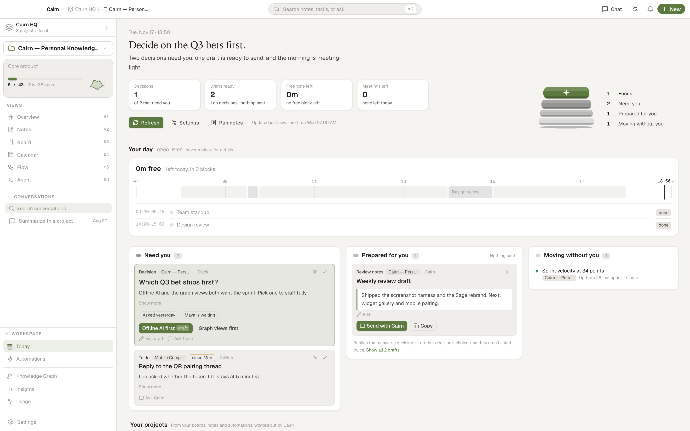

Today
A daily brief for your whole workspace. Every morning Cairn reads your boards, notes and connected apps and sorts what it finds into what needs you, what it prepared for you, and what's moving without you — then lets you answer, send, or ask follow-ups without leaving the view.

Opening Today
Click Today in the sidebar, above Automations. Turn it on and a run gathers each morning (07:00 on weekdays by default). The sidebar entry shows when a brief is being gathered and when a new one is ready. Items arrive as Cairn finds them, so the view fills in while it gathers and the headline comes last.
The brief
- Header — one line naming the first decision, four tiles (decisions waiting, drafts ready, free time left, meetings left), and a stack of stones whose top stone is the one thing to start with.
- Need you — decisions and to-dos. Each decision is a question with two or three answers as buttons, most urgent first (up to 15, the rest under "Show N more"). Carried items show a since Mon tag.
- Prepared for you — drafted replies, review notes and card breakdowns that answer no open decision. A draft on a decision's answer sits on that answer's button instead.
- Moving without you — FYI items that need no action.
- Day strip — your meetings with free time first (best focus block marked), plus an agenda list underneath.
- Your projects — under the lanes, per-project counts of cards due today, overdue, in review or stale 5+ days, failing automations, and notes changed since yesterday. Hover for the cards, click to open the board.
- Run notes — in the header: what changed in this run and what failed or was missing.
A refresh later in the day updates items in place — what you marked done or dismissed stays that way. Settings → Rebuild brief re-runs looking back 24 hours (72 on a Monday) to catch what earlier runs missed; items you marked done stay done.
Acting on items without leaving Today
Picking an answer, Send with Cairn or Ask Cairn opens a dialog with its own short chat — kept out of your chat list unless you click Keep in chat.
- Answer buttons — picking one hands the attached draft to chat (or to the send flow).
- Edit draft — every draft has an Edit link. Your text replaces Cairn's in Copy, Send and the answer buttons; Use Cairn's draft restores the original. Edits are saved when you close with Esc.
- Send… — shows where the reply goes and whether a connector can send it. Cairn makes the call only after you approve that exact call in the panel. When no connector can send there, the button is Copy and open instead. A sent item is marked done once everything Cairn did for it worked.
- Ask Cairn — on a to-do with nothing to send it's a plain question (what's next, blockers, steps) plus Mark done and Open the card; the chat can also edit cards or write notes when you ask.
History & carry-over
Open items you haven't marked done move to the next day's brief with their edits. Today keeps 30 days of briefs (plus the version a refresh replaced); anything older is deleted when the next run starts. A rail on the right has a mark per day — longer when more needed you, with a dot per earlier version. Hover to preview, click to open read-only, and use ← / → to step through versions, Esc for today. A banner on an older brief shows what's still open, resolved, or new.
Settings
Settings in Today holds the schedule plus a switch per project and per connected app. An app that's off isn't connected during the run at all. A web-search app starts off, with a note that search can carry what Cairn read in your other apps to that service. Settings → Export data saves one JSON file with the prompt, the brief, recent runs, and the last run's log and session events.
Today appears in Automations as "Today", with its schedule and run history — change the time or turn it off from Today's Settings. A Today run is retried once a day on failure, counts toward the automation budget, and shows its spend under the Usage source Today brief. In the Automations row, Open Today replaces Edit and Develop scripts.
What Today can & can't do
Today only reads. Its run gets lookup tools only (a tool whose name sends, posts, creates, edits or deletes is left out entirely; custom services are offered their GET operations only), so a 07:00 run never waits on you and never sends a draft. It doesn't read files on your computer or fetch web pages unless you turn on a web-search connector, and it can't approve its own hook-raised asks. Ask any chat what's happening today with the read-only get_today tool — it reads the workspace brief (headline, needs-you, drafts, FYI, meetings, free time) and works over the MCP server too, even while Cairn is closed.